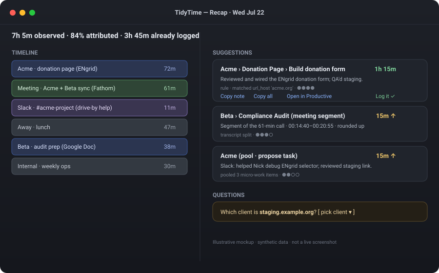
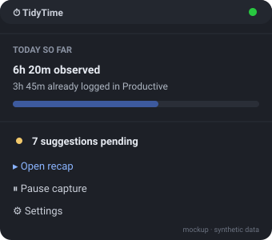
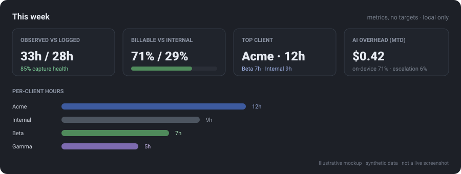
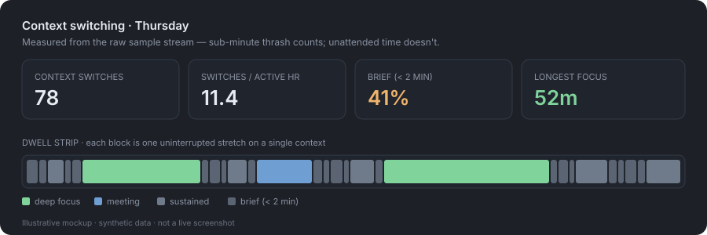

TidyTime is a native macOS menu bar app that watches how you actually spend your workday, reconstructs it into loggable blocks, and hands you ready-to-enter Productive time entries — task, rounded duration, and a one-line note. It recommends; you enter.
Built for backfill, not stopwatch discipline: capture everything passively, attribute afterward, and reconcile a whole day in a few minutes instead of an end-of-week archaeology session.
The recap window works the day top to bottom: the timeline on the left (colored by client), the suggestion stack on the right, questions at the bottom.



These are illustrative mockups with synthetic data, not live screenshots. TidyTime is a menu bar app that can't be captured programmatically in a headless build environment — the visuals reflect the shipped read-models and UI structure.
What it actually does.
Foreground app + window titles (via Accessibility, never Screen Recording), Chrome URL/title/visible text, idle & away detection. Sampling is change-gated, so an idle poll writes nothing.
Productive (clients/projects/tasks/entries), Fathom meetings & transcripts, Google Calendar, and Slack DMs/channels — including messages you sent from your phone.
Rules → lexical → on-device model → economy cloud → escalation. Local-first, then cheap, then smart — most sessions never touch the cloud. Sessions group on a fine key (normalized title + URL path), so two chats in one window can attribute to different projects while host rules still converge.
Grouped by task, rounded to 15 minutes with a slight round-up bias, micro-work pooled, meetings split per client, gap-analyzed against what you already logged.
Rate-limited, meeting-aware nudges during the day; a full recap at end of day (or first thing next morning). Ignoring nudges costs nothing.
Every cloud call is logged with tokens and dollar cost; per-provider and global daily budget caps drop the app to local-only instead of failing silently. All cloud inference goes through one vendor, so there's one key and one ledger.
A fast change-gated poll (default 1s) records a sample the moment the app, window title, or tab URL changes — so chat→chat and tab→tab register immediately, not at the next heartbeat. Per-message churn is normalized away so it doesn't fragment your day.
Switches, switches per active hour, mean and median dwell, brief-switch fragmentation, and longest focus — computed from the raw sample stream so sub-minute thrash still counts, with unattended time clipped out. Persisted daily so you can watch the trend.
Each session climbs only as far as it needs to.
Agentic tooling fragments a day in a way older time trackers never had to model.
A morning spent across four Claude chats, a Cowork session, an IDE, a terminal and Slack isn't idle — but it isn't focused either, and an hourly total hides that completely. TidyTime counts every switch from the raw sample stream, so the sub-minute jumps that billing rightly filters out as noise still show up here. Unattended time is clipped out first, so a lunch break never masquerades as deep focus.

The product's trust depends on invariants that are enforced by test, not discipline.
CGWindowList.Everything is terminal-drivable. Prerequisites: macOS 14+ (macOS 26 + Apple Intelligence unlocks the on-device rung), Xcode 16+, and Homebrew.
# clone, then from the repo root: make bootstrap # install XcodeGen + generate the Xcode project cp Local.xcconfig.example Local.xcconfig # set DEVELOPMENT_TEAM (a free Apple ID works) cp config.example.json config.json # non-secret settings make build # build the app make run # launch — the icon appears in the menu bar make test # run the TidyKit unit tests
Stable signing matters. macOS ties Accessibility/Automation grants to the code signature — sign with a stable identity so grants survive rebuilds. One-time setup (tokens, OAuth, Slack app) is a guided checklist in the repo docs.
Capture-first and strictly phased; each phase ships tested logic behind protocols.
Honest status: the logic layers are complete and tested headlessly, and the app has run live on a real Mac — signed dmg installed, Accessibility/Automation granted and persisting, capture banking real sessions, and live Slack/Fathom sync exercised (its first-run failures were caught by the app's own diagnostics and fixed). Not yet exercised live: the Google sign-in click and the cloud AI rungs. Three independent review rounds (96 findings, all triaged) back the test suite.